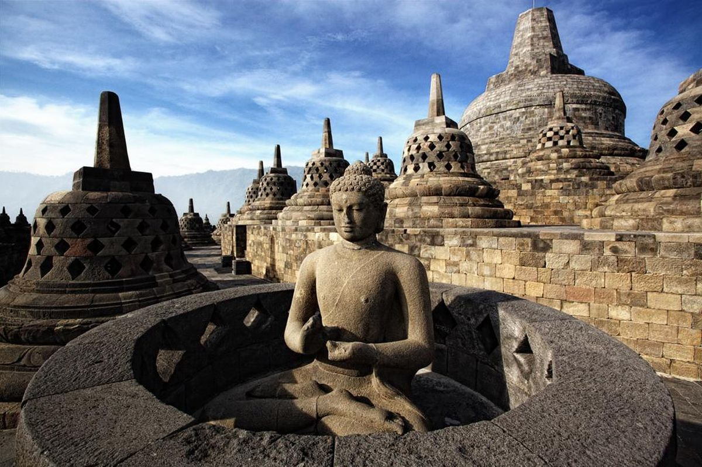
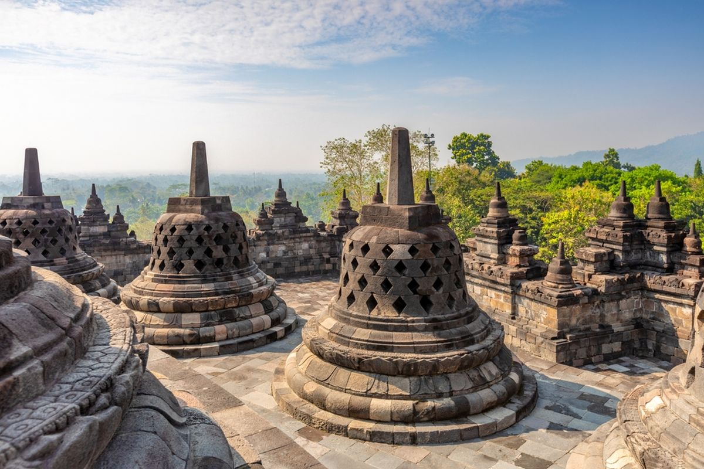
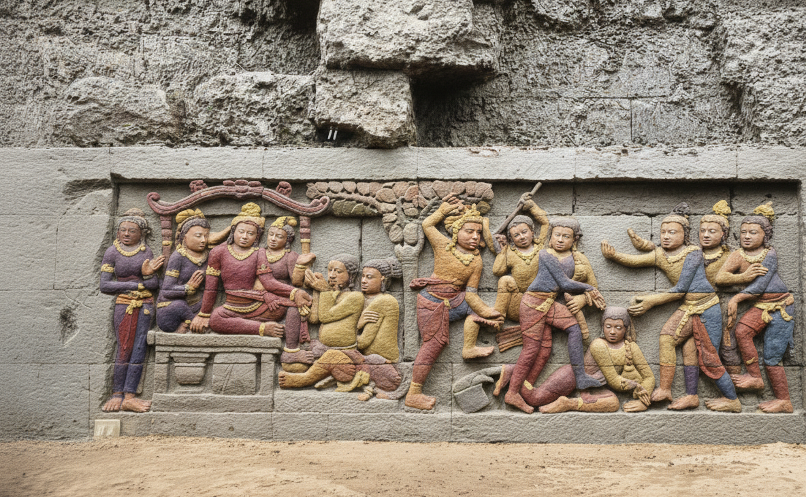

Stupa & Arsitektur
Jelajahi susunan teras, stupa, dan detail arsitektur yang menjadi ciri khas Candi Borobudur.
MAGELANG • JAWA TENGAH • INDONESIA
Nikmati kemegahan arsitektur, relief bersejarah, suasana pagi yang tenang, dan panorama alam di sekitar Borobudur.

TENTANG BOROBUDUR
Candi Borobudur merupakan salah satu tujuan wisata budaya yang menghadirkan perpaduan antara arsitektur, relief, stupa, dan pemandangan alam Jawa Tengah.
Pengunjung dapat menikmati area candi, mempelajari kisah yang tergambar pada relief, serta menyaksikan suasana pagi dengan panorama pegunungan di sekitarnya.
DAYA TARIK
Beberapa bagian yang dapat menjadi fokus perjalanan wisata di kawasan Borobudur.
Jelajahi susunan teras, stupa, dan detail arsitektur yang menjadi ciri khas Candi Borobudur.
Amati relief batu yang menghiasi dinding candi dan pelajari kisah yang direpresentasikan di dalamnya.
Nikmati cahaya pagi dan pemandangan pegunungan dari kawasan sekitar candi.
GALERI
Foto dapat diganti dengan koleksi foto milikmu sendiri.


TIKET
Harga di bawah merupakan contoh desain untuk tugas dan dapat diganti sesuai ketentuan tempat wisata.
Rp50.000 /orang
Rp100.000 /orang
Rp150.000 /orang
PESAN KUNJUNGAN
Isi formulir berikut untuk membuat simulasi pemesanan kunjungan. Pada website nyata, formulir ini dapat dihubungkan dengan database atau backend.
Magelang, Jawa Tengah, Indonesia
info@candiborobudur.example